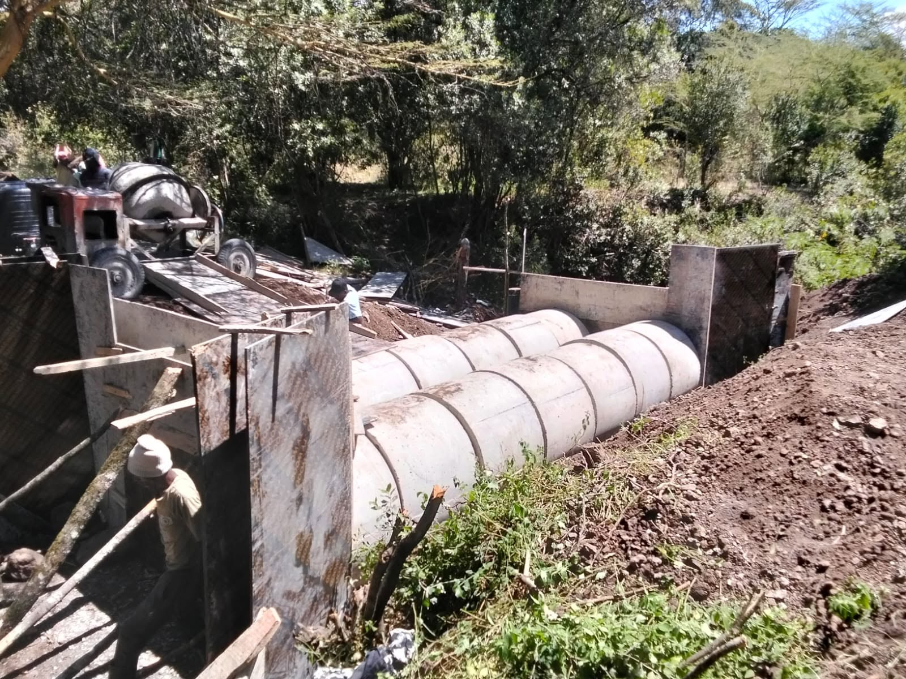
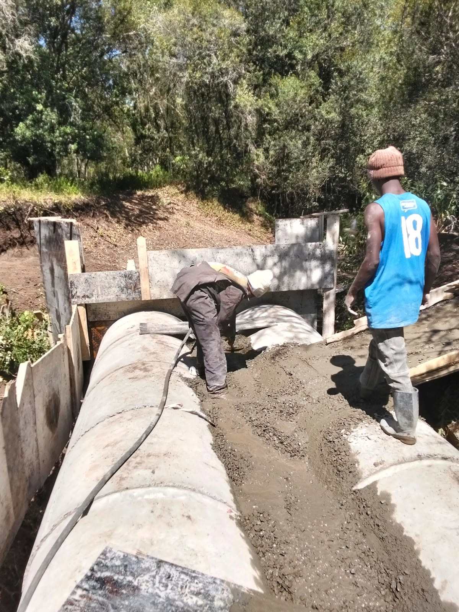

Civil infrastructure
Drainage & Earthworks
We prepare sites, manage stormwater, and shape durable groundworks that support roads, developments, and long-term infrastructure across Kenya.
What we deliver
Ground preparation and drainage systems built for durability.
CLAVO Construction delivers drainage and earthworks for roads, residential developments, commercial compounds, public works, and institutional projects across Kenya.
Our scope includes excavation, grading, drainage channels, culvert works, backfilling, compaction, and stormwater management to protect the road structure and surrounding site area from erosion, standing water, and unstable ground.
What happens
- Survey, levels, and drainage planning
- Site clearing and excavation
- Earthworks, grading, and compaction
- Drainage channels and culvert installation
- Final inspection and project handover
Work in context
Better drainage starts with proper ground shaping.
Effective drainage depends on correct levels, efficient runoff paths, and the stability of the soil beneath the structure. We coordinate earthworks and drainage to keep water moving away from roads, compounds, culverts, and foundations.





Drainage systems
Managing stormwater before it damages the road or site.
Drainage works are designed to carry runoff away from paved surfaces and the surrounding ground without creating erosion or waterlogging. We construct channels, culverts, and graded flow paths that direct stormwater safely and reduce long-term maintenance needs.
For roads and built environments in Kenya, reliable drainage is essential because seasonal rainfall, soil movement, and poor runoff control can quickly undermine previously sound works.
- Stormwater channel works
- Culvert installation and lining
- Roadside drainage and edge collection
- Runoff control and outfall management
- Erosion reduction and water diversion
- Condition-based maintenance planning
Earthworks and site preparation
Strong foundations begin with proper ground preparation.
Earthworks shape the site to the correct levels, improve ground support, and prepare the base for roads, drains, slabs, and infrastructure works. We handle stripping, excavation, filling, grading, compaction, and finish profiling to ensure the ground is ready for the next construction phase.
Accurate earthworks reduce settlement risk, improve drainage performance, and create more predictable site conditions for the rest of the project.
- Cut and fill operations
- Excavation and trenching
- Backfilling and grading
- Compaction and stabilization
- Site formation and profile control
- Ground preparation for infrastructure
Why Kenyan projects need strong drainage
Roads and infrastructure last longer when water is controlled correctly.
- Protects roads from waterlogging and erosion
- Improves stability of fills and embankments
- Reduces potholing and structural wear
- Supports long-term infrastructure performance
- Improves safety around construction and public access
- Reduces maintenance and lifecycle costs
Start a conversation
Need drainage works, culverts, or earthmoving support in Kenya?
Share your site constraints and scope, and we will help plan the right drainage and earthworks solution for your project.
Request a Quote